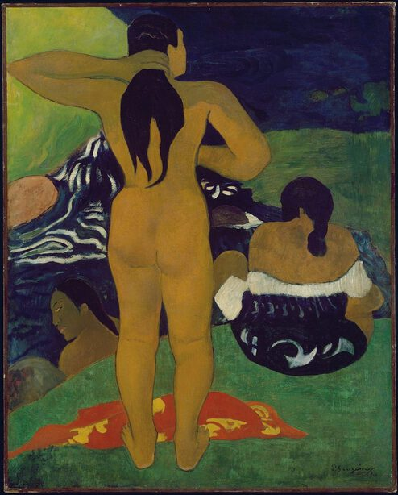

Paul Gauguin,1848 – 1903,"Symbolism,Post-Impressionism",French,"Eugène Henri Paul Gauguin (UK: , US: ; French: [øʒɛn ɑ̃ʁi pɔl ɡoɡɛ̃]; 7 June 1848 – 8 May 1903) was a French post-Impressionist artist. Unappreciated until after his death, Gauguin is now recognized for his experimental use of color and Synthetist style that were distinctly different from Impressionism. Toward the end of his life, he spent ten years in French Polynesia, and most of his paintings from this time depict people or landscapes from that region.",http://en.wikipedia.org/wiki/Paul_Gauguin,311
